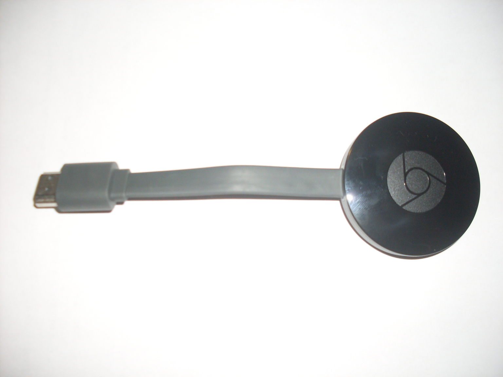

The Autopsy Report · Device #022
The 2015 Chromecast
The little puck that turned any TV with an HDMI port into a smart TV — rebuilt in 2015 with a round body, faster Wi-Fi, and three antennas. This is the public-records edition: we haven't opened one yet, but the paperwork already tells quite a story.
What is this thing?
The second-generation Chromecast is Google's media-streaming dongle: it plugs into your TV's HDMI port, joins your Wi-Fi, and plays whatever your phone, tablet, or computer tells it to — YouTube, Netflix, Spotify, and the rest — without needing a remote of its own. It runs a simplified version of Chrome OS under the hood. Chromecast overview
This one is model NC2-6A5 — the round 2015 redesign, sold in black, coral, and lemonade. Don't confuse it with the later NC2-6A5B, which is the third-generation model from 2018. Chromecast model comparison
Whose box is this?
Not ours — not yet. No unit of this device is on our bench. We haven't bought one, opened one, photographed one's insides, or listened to one boot. Everything on this page comes from public records: FCC filings, published teardowns, launch coverage, and a freely-licensed stock photo credited below. When a unit lands on our bench, this report gets a second edition with our own photos, measurements, and boot log.
A short history
- July 2013The original Chromecast launches at $35 and sells out almost immediately — Google's surprise hit of the year. Chromecast
- September 2015Google announces the second-generation Chromecast alongside Chromecast Audio: a bold circular design, three adaptive antennas, dual-band 802.11ac Wi-Fi, and a "Fast Play" feature for quicker connections. It goes on sale the same day in 17 countries for $35. 9to5Google VentureBeat
- September 2015The FCC filing (ID A4RNC2-6A5) is submitted, with the original equipment grant following on September 9. FCC filing
- October 2015Teardowns appear within days of launch, identifying the Marvell silicon inside. EDN teardown 9to5Google teardown
- October 2018Google discontinues the second generation, replaced by the third-gen model (NC2-6A5B). Chromecast
- August 2024Google retires the entire Chromecast line in favor of the Google TV Streamer. Chromecast
The outside
The 2015 redesign ditched the first generation's USB-stick shape for a flat circular puck — about 52 mm across — with a short HDMI cable looped out of its body so it hangs neatly behind the TV instead of jutting out rigidly. It came in black, coral (red), and lemonade (yellow), with a micro-USB port for power. VentureBeat

The board
We haven't held this board ourselves, so this is the teardowns' account, not ours. Published teardowns of the 2015 Chromecast show a single small round circuit board dominated by the Marvell system-on-a-chip, a separate Marvell Wi-Fi chip, Samsung RAM, and Toshiba flash storage. The 2015 model's headline hardware change was the radio: three adaptive antennas and dual-band 802.11ac Wi-Fi (2.4 GHz and 5 GHz), up from the original's single-band radio. EDN teardown 9to5Google teardown
One caution from the teardowns: the 2015 Chromecast 2 and the Chromecast Audio launched the same day and share DNA, but they are different devices with different boards. The chip list below is for the video Chromecast (NC2-6A5) only. 9to5Google teardown
Under the microscope: the chips
What's on the board according to published teardowns, what each part does, and how sure we are. Confirmed means a primary source (the manufacturer, the FCC, or our own bench) verifies it. Likely means public hardware records agree on it, but we haven't verified it ourselves. Every row links somewhere you can read more.
| Chip | What it does | How we know | Dig deeper |
|---|---|---|---|
| Marvell 88DE3006 Armada 1500 Mini Plus |
The main processor — a dual-core ARM Cortex-A7. Runs the whole dongle. | Likely Named by both published teardowns and by Marvell's own announcement of the Google partnership. | Marvell/Google announcement (mirror) |
| Marvell 88W8887 | The Wi-Fi radio — dual-band 802.11ac with the three-antenna array. | Likely Named by published teardowns and the Marvell announcement. | EDN teardown |
| Samsung K4B4G1646D-BY | The RAM — 512 MB of DDR3L, the dongle's short-term workspace. | Likely Marking reported by published teardowns; capacity corroborated by spec listings. | Family datasheet (third-party mirror) |
| Toshiba TC58NVG1S3H | The flash storage — 256 MB, where the device's software lives when the power is off. | Likely Marking reported by published teardowns; capacity corroborated by spec listings. | 9to5Google teardown |
Datasheet note: Marvell never published public datasheets for the 88DE3006 or 88W8887 — that's a documentation gap in the industry, not in the research. No manufacturer or archive.org datasheet was found for the Samsung or Toshiba parts either; the link above is a third-party mirror of the Samsung family datasheet, labeled as such. If you know of an official source, tell us and we'll upgrade the link.
The government's file on this box
Before Google could sell the 2015 Chromecast in the United States, it filed with the Federal Communications Commission under FCC ID: A4RNC2-6A5 ("A4R" is Google's grantee code). The original equipment applications are dated September 9, 2015 — twenty days before the public announcement. FCC filing
What's in the file:
- Internal and external photos — submitted September 8, 2015 and kept confidential until March 7, 2016, so the public couldn't peek before launch. They are the earliest public pictures of this hardware's insides.
- Test reports — the lab measurements: Bluetooth Low Energy at about 4 mW, the 2.4 GHz Wi-Fi radio up to about 79 mW, and 5 GHz entries up to about 44 mW. Boring to read, useful as independent confirmation of the radios.
- The user manual and label paperwork.
- What's missing. The schematics, the block diagram, and the operational description are listed but not publicly available — Google requested confidentiality, and the FCC agreed. Public photos, private blueprints.
Browse the file yourself: filing page
Listening to it boot
We haven't — there is no unit on our bench, so there is no boot log, no serial capture, nothing. That section gets written the day one arrives.
Our rule for debug ports, whenever we do meet this hardware: we listen, we don't knock. If the board exposes a serial console, we'll connect a read-only listener and record what the device volunteers about its own startup — and publish that. We won't use it to break in, dump firmware, or bypass anything. Public teardowns we reviewed don't document a debug header on this board, so even the existence of a console is currently unknown — it awaits the bench.
What we found
The 2015 Chromecast is a Marvell shop through and through. Both the application processor and the Wi-Fi radio are Marvell parts — the 88DE3006 and 88W8887 — a pairing Marvell itself announced alongside the Chromecast 2.0 launch. That's a clean, well-documented bill of materials for a $35 device. Marvell/Google announcement (mirror)
Don't buy a "2nd gen" that says NC2-6A5B. Sellers routinely mix up the model numbers: NC2-6A5 is this device (2015), NC2-6A5B is the third generation (2018). If you're hunting one for a collection or a project, check the label. Chromecast model comparison
What we didn't do
- This device is not on our bench. We have not disassembled one.
- We captured no boot log and ran no bench tests.
- We have not touched, extracted, modified, or shared this device's firmware.
- We have not probed any debug interface on it — none is publicly documented for this board.
- The product photo above is a freely-licensed stock image, credited in its caption — not our photography.
By the numbers
- Model: Google Chromecast 2nd gen (2015), NC2-6A5
- FCC ID: A4RNC2-6A5 (original grant September 9, 2015)
- Main chip: Marvell 88DE3006 "Armada 1500 Mini Plus" — dual-core ARM Cortex-A7 @ 1.2 GHz
- Memory: 512 MB DDR3L RAM, 256 MB flash storage
- Networking: Dual-band 802.11ac Wi-Fi (2.4/5 GHz), three adaptive antennas, Bluetooth LE
- Launched: September 29, 2015, at $35, in 17 countries
- Colors: Black, coral, lemonade
Words to know
Every term this page uses, in plain English. No prior knowledge required.
- System on a chip (SoC)
- The whole computer — processor and friends — on one piece of silicon.
- Dongle
- A small device that plugs directly into another device's port — here, an HDMI stick for your TV.
- 802.11ac
- A Wi-Fi standard generation. The "ac" in this box means it can use the faster, less crowded 5 GHz band.
- Flash storage
- The chip that holds the device's software when the power is off.
- Boot log
- The text a device prints as it starts up. Engineers read it to see what's inside without opening anything.
- UART / serial console
- A simple port that lets you watch a device narrate its own startup, line by line.
- Firmware
- The software baked into the device — the part that runs before anything else.
- FCC
- The Federal Communications Commission — the U.S. agency that regulates anything that transmits radio. Every wireless gadget sold here has to pass its tests first.
- FCC ID
- The ID the FCC assigns to each approved wireless product. The first few characters are the company's grantee code; the rest is the maker's model code. Punch it into fccid.io and the whole public filing comes up.
Sources & confidence
- Launch details (date, price, countries, features): contemporaneous launch coverage. High confidence.
- Chip identities: two published teardowns plus Marvell's partnership announcement agree. Medium-high confidence; still Likely until our bench confirms.
- FCC details (grant date, power levels, confidentiality): the public filing at fccid.io, reviewed September 2026. High confidence.
- Model-number distinction (NC2-6A5 vs NC2-6A5B): public model comparison. High confidence.
- No debug-port documentation found in the public teardowns reviewed. If one is documented somewhere we missed, tell us.
- Anything not listed here is unknown until the bench says otherwise. We'll say so, out loud, when that's the case.
Public-records edition. This device is not on our bench. No disassembly, no boot log, no bench testing, and no firmware touched, extracted, modified, or shared. The stock photo is freely licensed and credited in its caption.
Legal note. BareBoard is an educational project. Everything on this page is assembled from public records and freely-licensed photography credited in its caption. We don't publish, host, or distribute firmware, keys, passwords, or credentials. Product names and trademarks belong to their respective owners and appear here only to identify the hardware. If you believe anything here infringes your rights, contact us and we'll address it promptly.